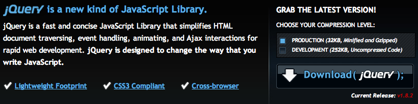
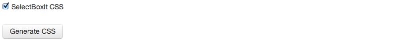
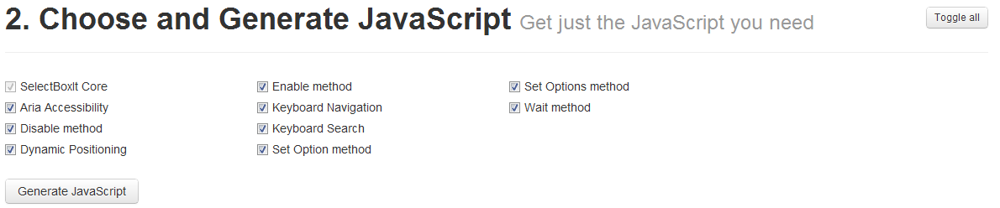
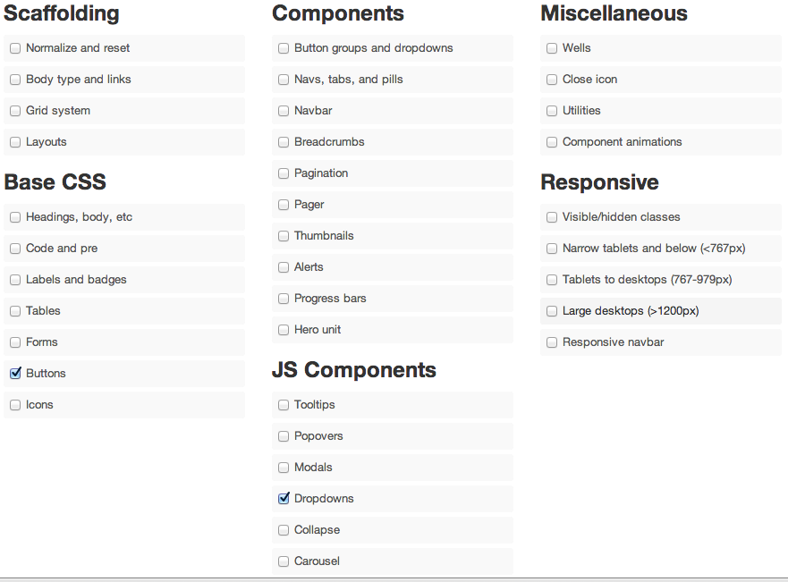

The project is hosted on Github, the annotated source code is available, and an online test suite is also available. SelectBoxIt is available for use under the MIT software license. You can report bugs and discuss features on the GitHub issues page, or send tweets to @gregfranko.
//Calls the selectBoxIt method on your HTML select box
var selectBox = $("select").selectBoxIt({
showEffect: "fadeIn",
showEffectSpeed: 600,
hideEffect: "fadeOut",
hideEffectSpeed: 600
});
//Calls the selectBoxIt method on your HTML select box
var selectBox = $("select").selectBoxIt({
showEffect: "shake",
showEffectOptions: { times: 1 },
hideEffect: "explode"
});
//Calls the selectBoxIt method on your HTML select box
var selectBox = $("select").selectBoxIt({
theme: "jqueryui",
showEffect: "slideDown",
showEffectSpeed: 600,
hideEffect: "slideUp",
hideEffectSpeed: 600
});
<select id="test" name="test">
<option value="SelectBoxIt is:" data-icon="ui-icon ui-icon-search">SelectBoxIt is:</option>
<option value="a jQuery Plugin" data-icon="ui-icon ui-icon-check">a jQuery Plugin</option>
<option value="a Select Box Replacement" data-icon="ui-icon ui-icon-check">a Select Box Replacement</option>
<option value="a Stateful UI Widget" data-icon="ui-icon ui-icon-check">a Stateful UI Widget</option>
</select>
<select id="test" name="test">
<option value="SelectBoxIt is:">SelectBoxIt is:</option>
<option value="a jQuery Plugin" disabled>a jQuery Plugin</option>
<option value="a Select Box Replacement" disabled>a Select Box Replacement</option>
<option value="a Stateful UI Widget" selected>a Stateful UI Widget</option>
</select>
<select id="optgroups" name="optgroups">
<option value="SelectBoxIt is:">SelectBoxIt is:</option>
<optgroup label="Optgroup 1">
<option value="a jQuery Plugin">a jQuery Plugin</option>
</optgroup>
<optgroup label="Optgroup 2">
<option value="a Select Box Replacement">a Select Box Replacement</option>
</optgroup>
<optgroup label="Optgroup 3">
<option value="a Stateful UI Widget">a Stateful UI Widget</option>
</optgroup>
</select>
jQuery 1.6.1+ (It is always recommended to use the latest version of jQuery)
jQueryUI Widget Factory 1.8.20+ (It is always recommended to use the latest version of the jQueryUI Widget Factory)
Twitter Bootstrap or jQueryUI CSS Theme
jQueryUI effects (only the custom Effects you use are required)
Supports Mobile, Tablet, and Desktop browsers
Themeable with Twitter Bootstrap and jQueryUI
Built-in ARIA support (Accessible Rich Internet Applications)
Full keyboard search and navigation support
An event API triggered on the original select box element that calls the plugin
A method API providing developers with methods to interact with the dropdown list (i.e. Search, Open, Disable, Set Options).
Selected, disabled, and optgroup support
Easily extendable to allow developers to create new widgets
Tested in IE7+, Firefox 4+, Chrome, Safari 4+, and Opera 11+
Tested in iOs 3+ and Android 2.1+
jQuery: Download the latest version of jQuery.

jQuery Widget Factory: Check the jQueryUI Widget Factory box
(Required).

jQueryUI Effects: Check the Effects Core box, and any of the custom animations you would like to use (optional).

SelectBoxIt CSS: Download the SelectBoxIt CSS (required).

SelectBoxIt JavaScript: Only the SelectBoxIt Core module is required. Include any other additional components that you like.

Twitter Bootstrap: Check the Buttons and Dropdowns boxes
(Required).
Note: The required Bootstrap stylesheet has been optimized by Shane Fire and is available here.

jQueryUI CSS: Download a default jQueryUI CSS Theme or create a new jQueryUI CSS Theme.

<link type="text/css" rel="stylesheet" href="jquery.selectBoxIt.css" />
<link type="text/css" rel="stylesheet" href="bootstrap.css" />
<script src="jquery.min.js"></script>
<script src="jquery-ui.custom.min.js"></script>
<script src="jquery.selectBoxIt.min.js""></script>
Note: This assumes that you have downloaded the CSS and JavaScript files to the same folder as your HTML page. Modify the href and src attributes if you have a different folder structure.
<select id="test" name="test">
<option value="SelectBoxIt is:">SelectBoxIt is:</option>
<option value="a jQuery Plugin">a jQuery Plugin</option>
<option value="a Select Box Replacement">a Select Box Replacement</option>
<option value="a Stateful UI Widget">a Stateful UI Widget</option>
</select>
Note: Your select box option value attributes and text do not have to be the same.
SelectBoxIt supports the selected and disabled HTML properties. Keep in mind that the last select box option to contain the selected property will be the select box option that the dropdown list uses as it’s default option. Also, the disabled property can be used to disable the entire dropdown or specific dropdown options.
<select id="test" name="test">
<option value="SelectBoxIt is:">SelectBoxIt is:</option>
<option value="a jQuery Plugin">a jQuery Plugin</option>
<option value="a Select Box Replacement">a Select Box Replacement</option>
<option value="a Stateful UI Widget" selected>a Stateful UI Widget</option>
</select>
Here is an example of setting the disabled property for multiple individual select box options:
<select id="test" name="test">
<option value="SelectBoxIt is:">SelectBoxIt is:</option>
<option value="a jQuery Plugin" disabled>a jQuery Plugin</option>
<option value="a Select Box Replacement">a Select Box Replacement</option>
<option value="a Stateful UI Widget" disabled>a Stateful UI Widget</option>
</select>
SelectBoxIt supports optgroups. You have full control to style the optgroups by using the optgroupHeader and optgroupOption CSS classes. There is no special syntax to use optgroups, just use them like you normally do.
<select id="optgroups" name="optgroups">
<option value="SelectBoxIt is:">SelectBoxIt is:</option>
<optgroup label="Optgroup 1">
<option value="a jQuery Plugin">a jQuery Plugin</option>
</optgroup>
<optgroup label="Optgroup 2">
<option value="a Select Box Replacement">a Select Box Replacement</option>
</optgroup>
<optgroup label="Optgroup 3">
<option value="a Stateful UI Widget">a Stateful UI Widget</option>
</optgroup>
</select>
Note: The SelectBoxIt CSS file uses CSS classes by default. It is heavily commented to help you understand how to style your dropdown list. If you have multiple select boxes on the page and want each select box to have unique styles, then you should instead make sure your HTML select box has an id attribute, since SelectBoxIt uses the id attribute to dynamically generate an id for each dropdown list.
Call the plugin: In your JavaScript code, call the selectBoxIt() method on your HTML select box.
//Executes your code when the DOM is ready. Acts the same as $(document).ready().
$(function() {
//Calls the selectBoxIt method on your HTML select box.
var selectBox = $("select#test").selectBoxIt().data("selectBoxIt");
});
The Options API allows you to customize the dropdown list by setting custom options and getting all current options.
All options can be set when the plugin is called, or after the plugin is called, using the setOption() or setOptions() methods.
Here is an example of setting a single option when the plugin is first invoked:
//Executes your code when the DOM is ready. Acts the same as $(document).ready().
$(function() {
//Calls the selectBoxIt method on your HTML select box and updates the showEffect option
var selectBox = $("select#test").selectBoxIt({ showEffect: "fadeIn" }).data("selectBoxIt");
});
//Executes your code when the DOM is ready. Acts the same as $(document).ready().
$(function() {
//Calls the selectBoxIt method on your HTML select box
var selectBox = $("select#test").selectBoxIt().data("selectBoxIt");
// Updates both the showEffect and showEffectSpeed options
selectBox.setOptions({ showEffect: "fadeIn", showEffectSpeed: "medium" });
});
//Executes your code when the DOM is ready. Acts the same as $(document).ready().
$(function() {
//Calls the selectBoxIt method on your HTML select box
var selectBox = $("select#test").selectBoxIt().data("selectBoxIt");
// Updates the showEffect option
selectBox.setOption("showEffect", "fadeIn");
});
A single option can be retrieved by using the option() method. All of the current options can be retrieved by referencing the options property.
//Executes your code when the DOM is ready. Acts the same as $(document).ready().
$(function() {
//Calls the selectBoxIt method on your HTML select box
var selectBox = $("select#test").selectBoxIt().data("selectBoxIt");
// Writes the showFirstOption option to the console
console.log(selectBoxIt.option("showFirstOption"));
});
//Executes your code when the DOM is ready. Acts the same as $(document).ready().
$(function() {
//Calls the selectBoxIt method on your HTML select box
var selectBox = $("select#test").selectBoxIt().data("selectBoxIt");
// Writes all of the current plugin options to the console
console.log(selectBoxIt.options);
});
| Name | Type | Default | Options |
|---|---|---|---|
| showEffect | String | "none" | "none", "fadeIn", "show", "slideDown", or any of the jQueryUI show effects (i.e. "bounce") |
| showEffectOptions | Object Literal | { } | All of the available properties are based on the jqueryUI effect options(i.e. {direction: "down"} ) |
| showEffectSpeed | String or Number | "medium" | "slow", "medium", "fast", or any numeric number (milliseconds) |
| hideEffect | String | "none" | "none", "fadeOut", "hide", "slideUp", or any of the jQueryUI hide effects (i.e. "bounce") |
| hideEffectOptions | Object Literal | { } | All of the available properties are based on the jqueryUI effect options(i.e. {direction: "up"} ) |
| hideEffectSpeed | String or Number | "medium" | "slow", "medium", "fast", or any numeric number (milliseconds) |
| showFirstOption | Boolean | true | true or false |
| defaultText | String | " " | Any text may be used |
| defaultIcon | String | " " | Any valid string classname may be used |
| downArrowIcon | String | " " | Any valid string classname may be used |
| theme | String | "twitterbootstrap" | "twitterbootstrap" or "jqueryui" |
| keydownOpen | Boolean | true | true or false |
| isMobile | Function | Uses the script from detectmobilebrowsers.com | Any function that returns true or false |
These options can be set on the select box or individual options directly within the HTML code
| Name | Type | Default | Options |
|---|---|---|---|
| data-icon | String | " " | Any valid string classname may be used |
| data-downarrow | String | " " | Any valid string classname may be used |
| data-text | String | " " | Any text may be used |
The Events API allows your application to listen to user events triggered on the dropdown list. All custom/default events are triggered on the original select box element (not the new dropdown list).
The original select box value attribute is also synced with the new dropdown list, so if a user selects a new value from the dropdown list, the original select box value will also be updated. This allows your existing code to continue working inside of forms.
You can catch Default Events by using the jQuery bind() or on() methods, or by using jQuery convenience methods such as click(), change(), etc. You must use the jQuery bind() or on() methods to catch Custom Events.
//Executes your code when the DOM is ready. Acts the same as $(document).ready().
$(function() {
//Calls the selectBoxIt method on your HTML select box and updates the showEffect option
var selectBox = $("select#test").selectBoxIt({ showEffect: "fadeIn" }).data("selectBoxIt");
// Uses the jQuery bind method to bind to the focus event on the dropdown list
$("select#test").bind({
"focus": function() {
// Do something when the focus event is triggered
}
});
});
//Executes your code when the DOM is ready. Acts the same as $(document).ready().
$(function() {
//Calls the selectBoxIt method on your HTML select box
var selectBox = $("select#test").selectBoxIt().data("selectBoxIt");
// Uses the jQuery focus convenience method to bind to the focus event on the dropdown list
$("select#test").focus(function() {
// Do something when the focus event is triggered
});
});
//Executes your code when the DOM is ready. Acts the same as $(document).ready().
$(function() {
//Calls the selectBoxIt method on your HTML select box
var selectBox = $("select#test").selectBoxIt().data("selectBoxIt");
// Uses the jQuery bind method to bind to the custom open event on the dropdown list
$("select#test").bind({
"open": function() {
//Do something when the open event is triggered
}
});
});
Note: If you don't want to have to explicitly list the id or classname attributes of the select box you are listening to events on, you can use the pseudo selector that SelectBoxIt provides you.
| Name | Description |
|---|---|
| focus | A focus event will be triggered when a user either clicks or tabs to the dropdown list. |
| focusin | A focusin event will be triggered when a user either clicks or tabs to the dropdown list. Focus and focusin events are closely related, but the focusin event bubbles up the DOM tree and the focus event does not bubble. If you are using a library such as Backbone.js, which uses event delegation, use the focusin event to determine when the select box element gains focus. |
| click | A click event will be triggered when a user clicks on the dropdown list. |
| blur | A blur event will be triggered when the dropdown list loses focus. |
| focusout | A focusout event will be triggered when the dropdown list loses focus. Blur and focusout events are closely related, but the focusout event bubbles up the DOM tree and the blur event does not bubble. If you are using a library such as Backbone.js, which uses event delegation, use the focusout event to determine when the select box element loses focus. |
| change | A change event will be triggered when a user selects a new dropdown list option. |
| mouseenter | A mouseenter event will be triggered when a user’s mouse enters an element. jQuery uses both mouseenter and mouseleave to simulate a hover event. |
| mouseleave | A mouseleave event will be triggered when a user’s mouse leaves an element. jQuery uses both mouseenter and mouseleave to simulate a hover event. |
| Name | Description |
|---|---|
| open | An open event will be triggered when a user opens the dropdown list. |
| close | A close event will be triggered when a user closes the dropdown list. |
| moveDown | A moveDown event will be triggered when a user presses the down arrow key to select a dropdown list option directly beneath the currently selected option. |
| moveUp | A moveUp event will be triggered when a user presses the up arrow key to select a dropdown list option directly above the currently selected option. |
| search | A search event will be triggered when a user does a text search that matches a dropdown list option. Keep in mind that this event will be fired only when a search match is found. |
| enter | An enter event will be triggered when a user presses the enter key while the dropdown list is focused. |
| tab-focus | A tab-focus event will be triggered when a user presses the tab key to focus the dropdown list. |
| tab-blur | A tab-blur event will be triggered when a user presses the tab key to blur the dropdown list. |
| option-click | An option-click event will be triggered when a user clicks a dropdown list option. |
| backspace | A backspace event will be triggered when a user presses the backspace key while the dropdown list is focused. |
| disable | A disable event will be triggered if a dropdown list becomes disabled. |
| enable | An enable event will be triggered if a dropdown list becomes enabled, or in other words, no longer disabled. |
| destroy | A destroy event will be triggered if a dropdown list is destroyed |
| create | A create event will be triggered if a dropdown list is created. |
| changed | A changed event will be triggered after the original select box change event is fired and the dropdown text is changed. |
The Method API allows you to programmatically interact with the dropdown list after it is created. All methods can be called individually or chained.
//Executes your code when the DOM is ready. Acts the same as $(document).ready().
$(function() {
//Calls the selectBoxIt method on your HTML select box and updates the showEffect option
var selectBox = $("select#test").selectBoxIt({ showEffect: "fadeIn" }).data("selectBoxIt");
// Chaining
selectBox.open().close().moveDown().disable();
});
//Executes your code when the DOM is ready. Acts the same as $(document).ready().
$(function() {
//Calls the selectBoxIt method on your HTML select box and updates the showEffect option
var selectBox = $("select#test").selectBoxIt({ showEffect: "fadeIn" }).data("selectBoxIt");
// Individual calls
selectBox.open();
selectBox.close();
selectBox.moveDown();
selectBox.disable();
});
//Executes your code when the DOM is ready. Acts the same as $(document).ready().
$(function() {
//Calls the selectBoxIt method on your HTML select box
var selectBox = $("select#test").selectBoxIt().data("selectBoxIt");
// Opens the dropdown list for two seconds before closing the dropdown list
selectBox.open().wait(2000, function() { this.close() })
});
//Executes your code when the DOM is ready. Acts the same as $(document).ready().
$(function() {
//Calls the selectBoxIt method on your HTML select box
var selectBox = $("select#test").selectBoxIt().data("selectBoxIt");
// Calls the selectBoxIt open() method
selectBox.open(function() {
// The 'this' keyword references the selectBoxIt object
this.moveDown();
});
});
| Name | Parameters | Description |
|---|---|---|
| open | none | Opens the dropdown options list. |
| close | none | Closes the dropdown options list. |
| moveDown | none | Selects the dropdown option directly beneath the currently selected option. |
| moveUp | none | Selects the dropdown option directly above the currently selected option. |
| search | String searchTerm | Selects the dropdown option that most closely matches the text passed into the method. If a pattern match is found, the dropdown text value changes. If a pattern match is not found, then the dropdown text value does not change. |
| setOption | String key, String value | Sets a single plugin option. |
| setOptions | Object newOptions | Sets or adds new plugin option settings. |
| disable | none | Disables the dropdown/select box. |
| enable | none | Enables the dropdown/select box. |
| destroy | none | Removes the dropdown from the DOM and makes the original select box element visible. |
| wait | Number time, Function callback | Delays execution of the callback function by the amount of time (milleseconds) specified by the time parameter. |
| refresh | none | Rebuilds the dropdown. Useful for dynamic content. |
Selecting the dropdown will trigger the default wheel interface for all mobile devices. This behavior improves usability for users.
By default, SelectBoxIt uses the mobile detection regex script from www.detectmobilebrowsers.com. This script is fairly exhaustive, and will catch most mobile browsers.
If you would like to customize which mobile browsers you would like to support, feel free to create your own mobile detection function inside of the isMobile option. Below is an example of overriding the isMobile option to only support iPhones and iPads:
//Executes your code when the DOM is ready. Acts the same as $(document).ready().
$(function() {
//Calls the selectBoxIt method on your HTML select box
var selectBox = $("select#test").selectBoxIt({ isMobile: function() {
if((navigator.userAgent.match(/iPhone/i)) || (navigator.userAgent.match(/iPad/i))) {
return true;
}
else {
return false;
}
}});
});
Take care to maintain the existing coding style. Add Jasmine unit tests for any new or changed functionality. Lint and test your code using Grunt.
If you plan to contribute to SelectBoxIt in the future, keep in mind that you should make sure your code passes the Grunt checks. If you are on Windows (like me) remember you need to run the Grunt command using grunt.cmd. Also, if you have trouble getting the Jasmine Unit Tests to work with PhantomJS 1.5 (the current release), install PhantomJS 1.3.
After you have verified your code, send a pull request to the SelectBoxIt dev branch.After you send a pull request, you will hear back from me shortly after I review your code. You’ll find source code in the src subdirectory!
If you find that you need a feature that SelectBoxIt does not currently support, either let me know via the Github issue tracker, or fork the project and and easily extend SelectBoxIt to create your own widget!
Note: Remember that you need to include jQuery, the jQueryUI Widget Factory, and SelectBoxIt before you include your new plugin file, since your plugin will depend on SelectBoxIt and all of its dependencies.
Here is an example of extending SelectBoxIt
// Plugin setup
(function ($) {
// Declaring a new jQueryUI Widget that extends SelectBoxIt
$.widget('a.newPlugin', $.selectBox.selectBoxIt, {
// Changing SelectBoxIt's default showEffect from 'none' to 'slide'
options: {
showEffect: "slide",
},
//Overwriting the SelectBoxIt open method
open: function() {
//Calling the default SelectBoxIt open method
$.selectBox.selectBoxIt.prototype.open.call(this);
// Adding new logic
console.log("Just opened my new plugin!");
}
});
//Then call your new plugin like this
var selectBox = $("select#test").newPlugin().data("newPlugin");
}(jQuery));
If you would like to support the SelectBoxIt project, please consider sending a donation to Greg Franko (the project maintainer). All donations (small or large) are appreciated and help the continued development of the project.